Amicone Opera Singers
이탈리아에서 성악을 함께 공부한 다섯 사람 — 소프라노, 메조소프라노, 테너, 바리톤, 그리고 피아노.
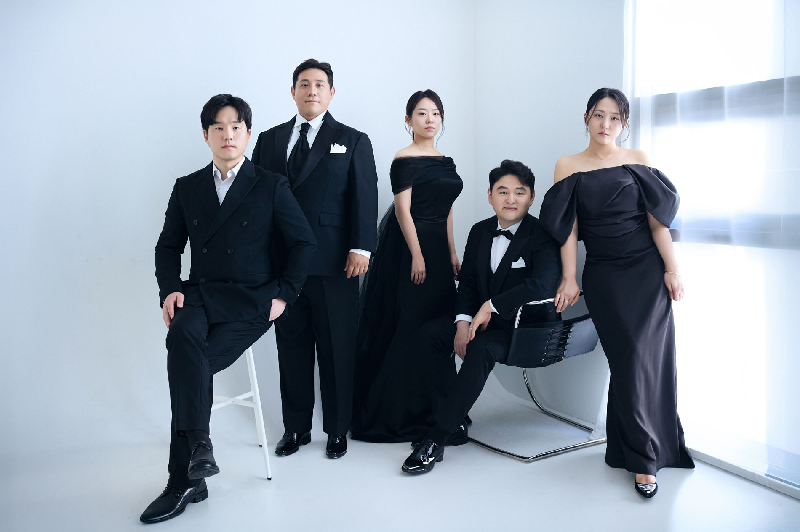
각기 다른 색을 지닌 아티스트들이 아미코네라는 이름 아래 하나의 소리를 만듭니다.
Studio · 2025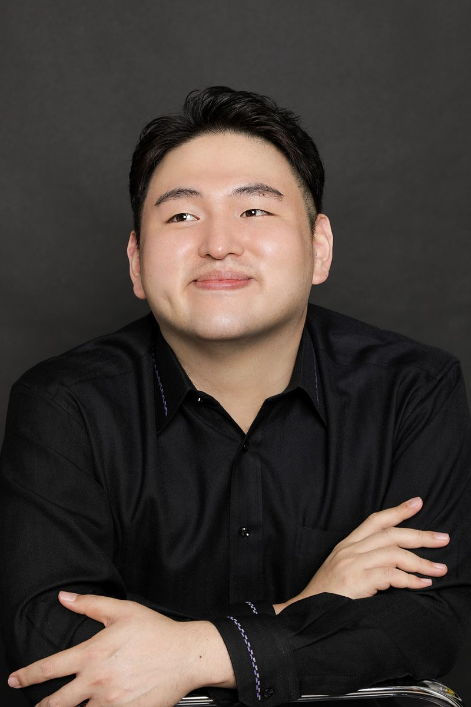
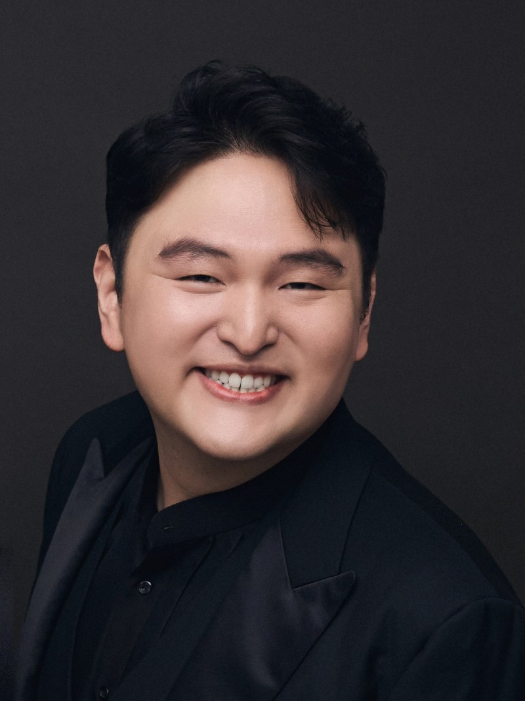
Baritone
대표 · General Director
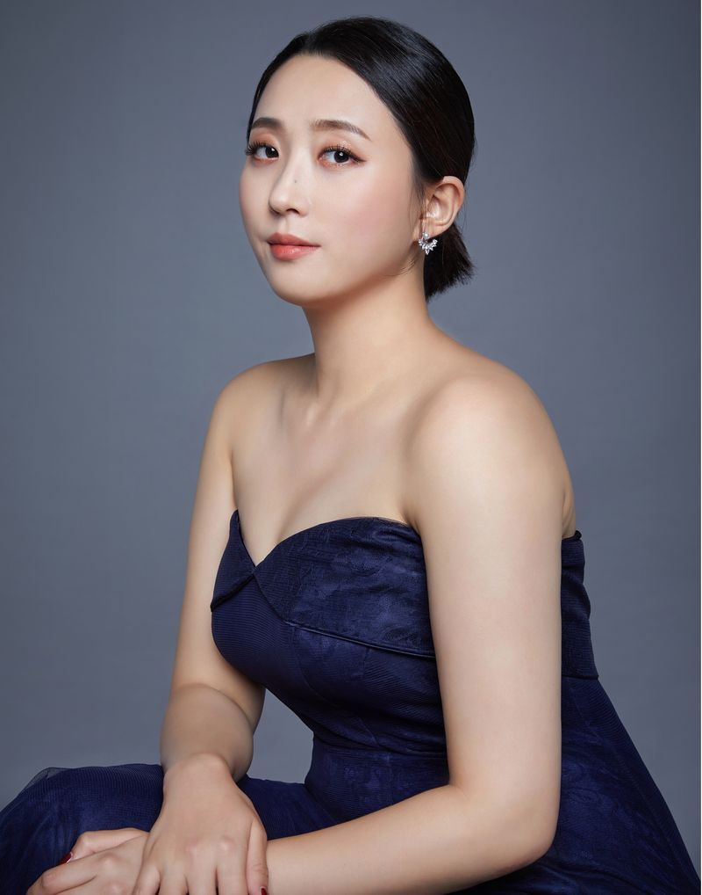
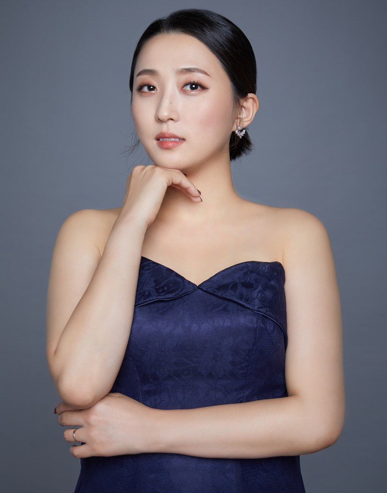
Soprano
소프라노
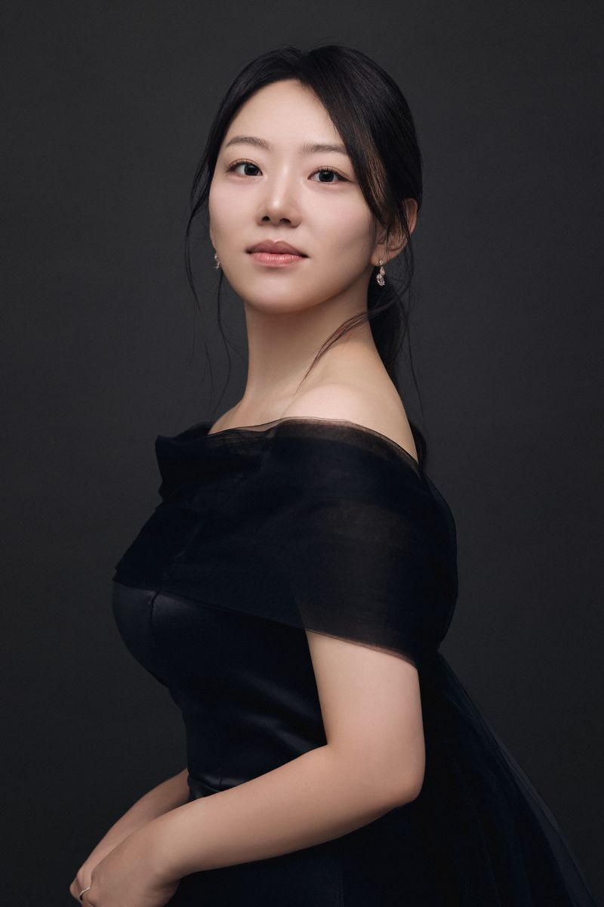
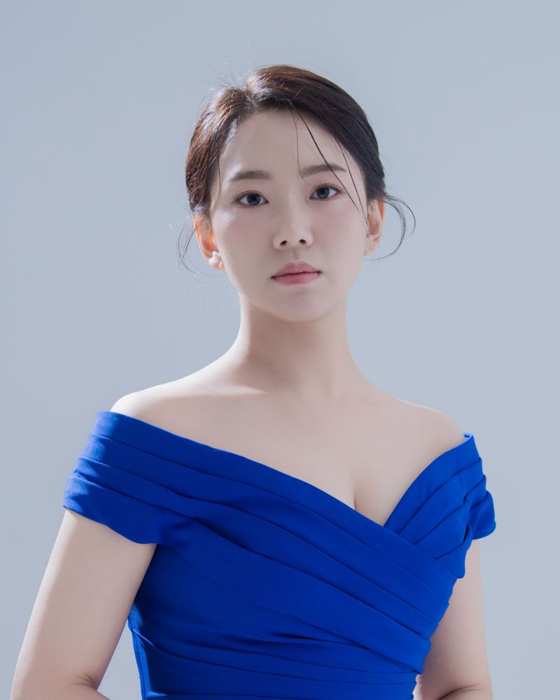
Mezzo-soprano
메조소프라노
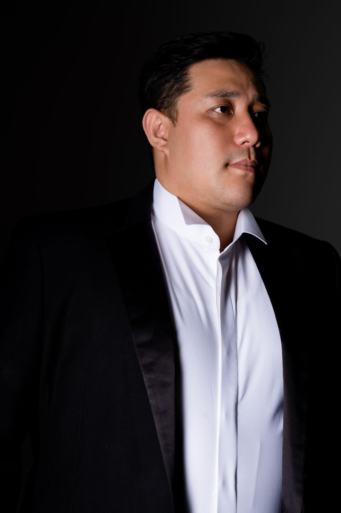
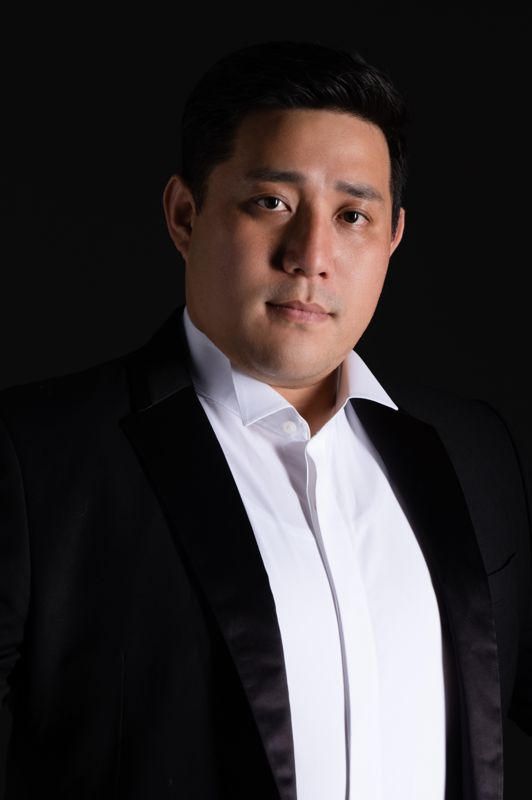
Tenor
테너
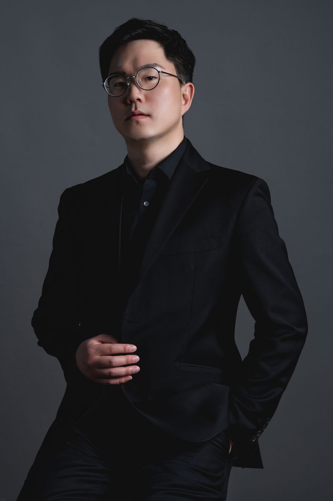
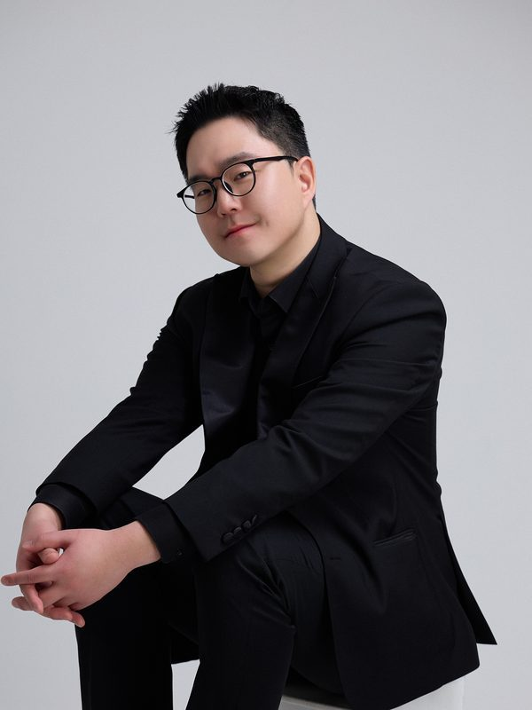
Piano
음악코치 · Music Coach